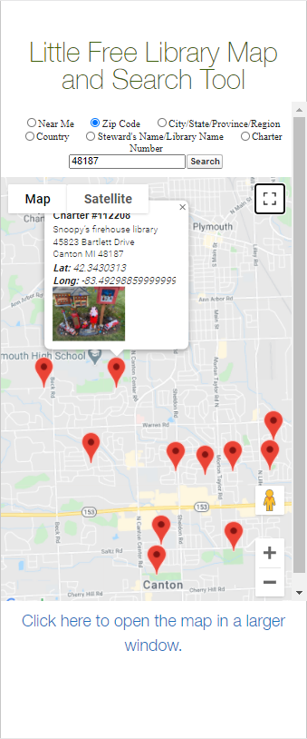
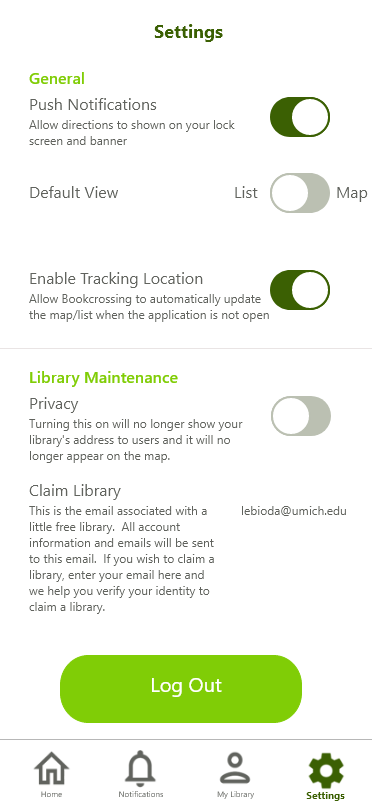
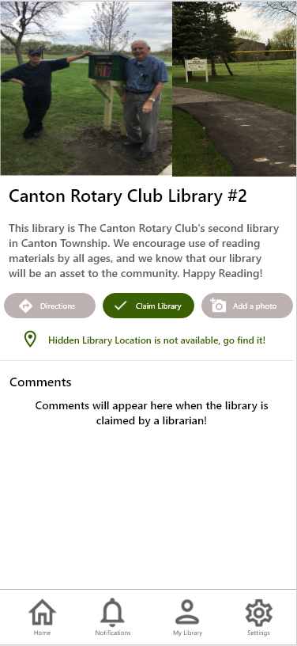
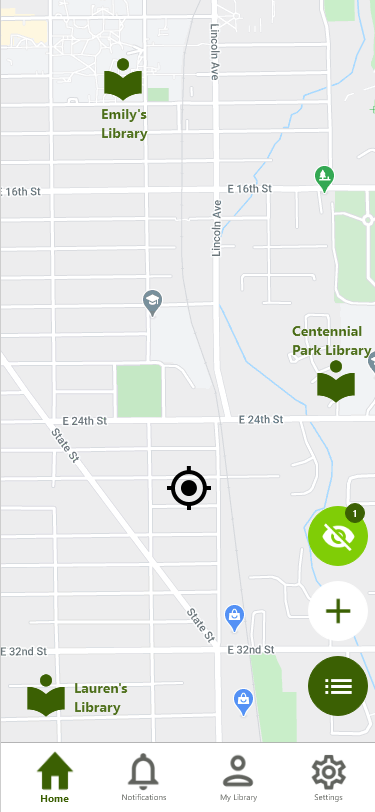
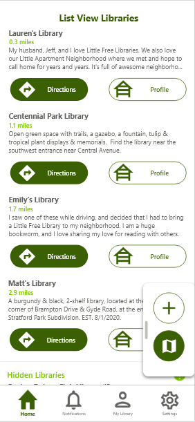
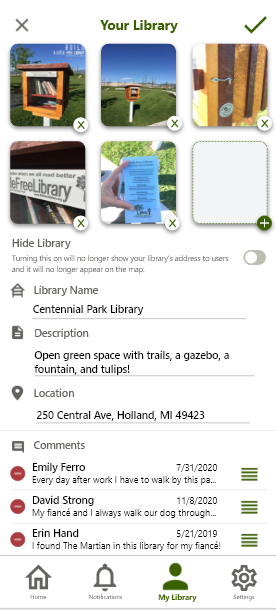
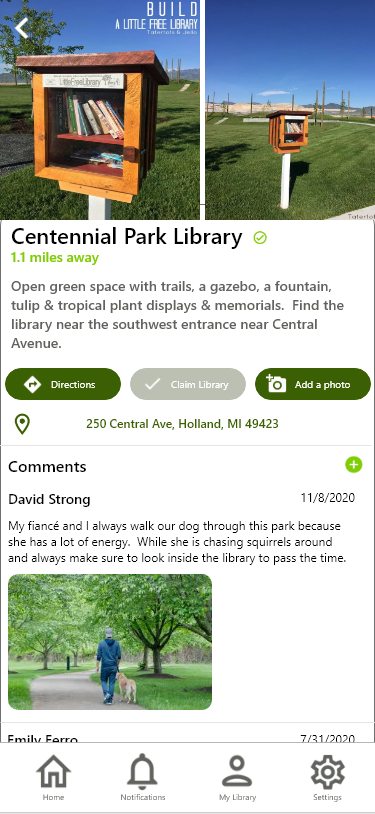

BookCrossing is an app my team and I prototyped for the class SI 582: Interaction Design. We decided to develop a prototype of a mobile application for Little Free Libraries because although they have a website that includes a map to show you where all the libraries are located, it is not user friendly and limites the abiltity to create and sustain a community to expand book access for all.
Overview
Background
Little Free Libraries is a great organization for avid readers to expand book access for all through a global network of volunteer-led little libraries, however, their website, specifically the map, is not mobile friendly and makes it difficult to find libraries on-the-go. Local residents who do not want to walk aimlessly through their neighborhood would have to look up a library on the web and input the library address into a navigation application, which adds extra steps to the process. These walkers do not want to have to go home and use their computer to look up more libraries, they want an instantaneous way to see other libraries nearby and detour to see them.
Problem
Looking at the picture below, the current mobile view of their map requires the user to input some necessary information in order to see any of the libraries in that area. The libraries on the map only have one picture available (that the user cannot increase in size to see it), the name, and the location). The quickest way to get directions to this library near you would require you to copy the latitude/longitude or address, open up a directions application, paste the text and then search for your location. Once you to the library you were dying to see, you have no way of expressing your gratitude to the owner for the new book you just found or the design of their bookcase.
Technologies Used:
Figma, Adobe XD, paper prototypes and wire frames
Solution
Users
The primary users that we are targeting are local neighborhood residents who often take walks and enjoy spending their free time exploring. Other potential users consist of those who create public bookcases and want to know how people feel about them and create a community through their love of sharing books. Additionally, parents of children of poverty will be able to access the free libraries in order to support their education.
Settings
Like most mobile applications, we gave our users the ability to opt out of recieving push notifications for directions add nearby libraries and the ability to turn of location tracking. Library owners can verify their email and their library with the organization in order to claim their library and be able to edit their library page and approve or decline comments and pictures from people who have visited.
Througout interviewing current little libray owners, one of their main concerns was privacy. Some owners do not want to give out their address and would rather have people stumble upon their library. We added hidden libraries to our applicatoin which will not show their address, but still has a profile where users can post their pictures and comments.
Map and List View
Upon opening the application, the user is either met with a List View of all the libraries near them or a Map View depending on their preferences. The map view contains three buttons in the bottom right corner. The light green buttons shows the amount of hidden libraries near them as well as explains what hidden libraries are. During user testings, users were confused as to why more libraries were populated on the list view compared to the map, so we added this clarification. The white button allows users to add a new library they find that is not currently in little free libraries database. The green button toggles between the list view and the map view.
Clicking on the library icon brings up a preview of the library profile where the user can see the name, the distance, the address (if available), a button that brings up a directions screen, and a button to the library's full profile. We created two views for the libraries because some users want to find the nearest library while they are on their walk in order to have an end goal to their walk. The map view exists so users have a digestable medium which shows them all options.
Throughout our interations, one aspect we got comments on was consistent thoughout the application. One of our original designs had the toggle button in the top left corner of the list view, but near the bottom right corner of the map view because of the available space. This lead us to creating a pop out menu on the list view to keep the placement of the buttons at the same location on both views since they serve the same function
Add and Editing a Library
Currently, if a librarian wants to add their library, they must send an email to the Little Free Library organization and requesting it be added to the map. They are limited to one picture, a short description, a name and an address. If a librarian wants to make another change later, they must send another email and someone from the organization will manually update it. BookCrossing allows the librarian to make any updates within the application where they can add multipe pictures (and use explorer submitted content) and instantaneously update their information without a third party being inov. Librians can also accept or decline user submitted comments and pictures that can shown on their profile. 
Library Profile Page
One of the biggest issues with the current Little Free Library map is the simplistic library profile page. Explorers cannot even contribute photo of them holding up their newly acquired book next to bookcase or give a compliment to the owner on the design. BookCrossing's library profile pages not only shows them the name, description, location, and a picture, but it enables users the ability to contribute to the community as well as see how other people have contributed to a given library. 
Video
Watch the video below for a full demo of the design!